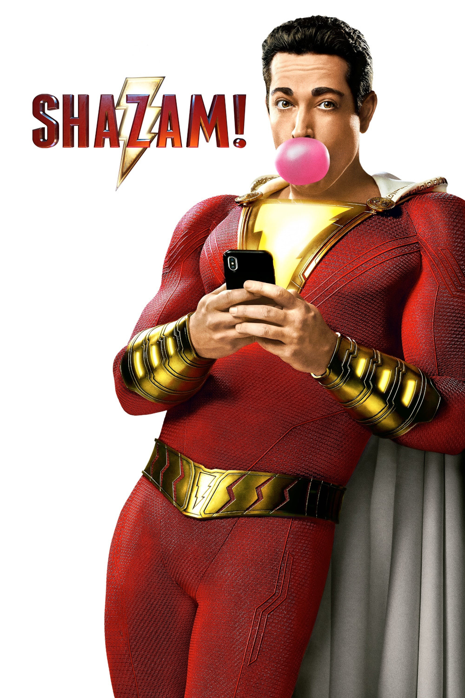

Мировая премьера: 5 апреля 2019
Слоган: Хочешь спасти мир? Скажи "Шазам!"
Сюжет: В каждом из нас дремлет супергерой. Чтобы пробудить его, нужно лишь немного магии. Благодаря древнему волшебнику, 14-летний сирота Билли Бэтсон получил невероятную способность: стоит ему прокричать магическое слово "Шазам!", и он превращается во взрослого супергероя. Билли, который в душе остаётся всё тем же ребёнком, наслаждается взрослой версией самого себя в мощном, божественном теле и использует свои сверхспособности ровно так, как и подобает подростку, – для веселья! Умеет ли он летать? Обладает ли он рентгеновским зрением? Может ли пускать молнии из рук? Под силу ли ему прогулять контрольную по обществоведению? Шазам познаёт свои способности с поистине детской безмятежностью. Но Билли придётся поспешить с освоением обретённой силы, ведь вскоре ему предстоит принять бой со смертоносными силами зла доктора Таддеуса Сиваны.
Режиссёр: Дэвид Ф. Сандберг
В основе: Комиксы о Капитане Марвеле (США, выходят с 1939, авторы – Билл Паркер и Ч.К. Бек)
Серия: Расширенная вселенная DC
В ролях:
| Закари Ливай | Шазам |
| Джек Дилан Грейзер | Фредди Фриман |
| Марк Стронг | Доктор Таддеус Сивана |
| Эшер Энджел | Билли Бэтсон |
| Грэйс Фултон | Мэри Бромфилд |
| Джимон Хонсу | Волшебник |
| Фэйти Херман | Дарла Дадли |
| Марта Миланс | Роза Васкес |
| Купер Эндрюс | Виктор Васкес |
| Йен Чен | Юджин Чой |
| Адам Броди | Фредди-супергерой |
| Кэролайн Палмер | Мэрилин Бэтсон |
| Итан Пуджиотто | Таддеус Сивана в 1974 |
| Джон Гловер | Мистер Сивана |
| Йован Арман | Педро Пенья |
| Миган Гуд | Дарла-супергерой |
| Мишель Борт | Мэри-супергерой |
| Росс Батлер | Юджин-супергерой |
| Ди Джей Котрона | Педро-супергерой |
Бюджет: $ 100 млн.
Кассовые сборы в США: $ 140 млн.
Кассовые сборы в мире: $ 368 млн.
Продолжительность: 2 ч. 1 мин.
Рейтинг: 7.0